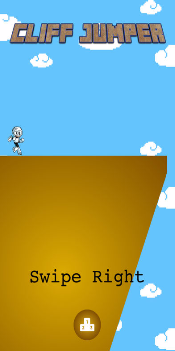
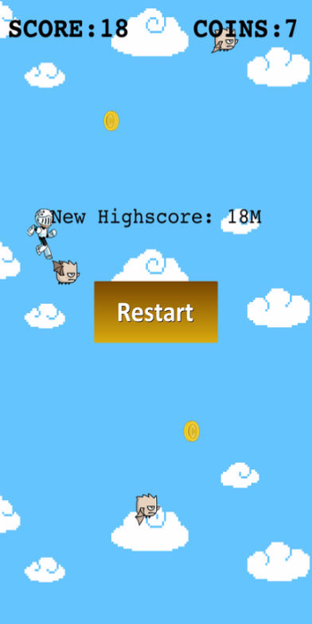
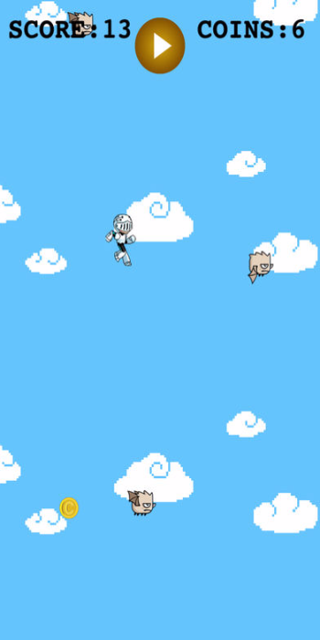

Cliff Jumper
Jump from an Infinite Cliff
Cliff Jumper is an infinite scroller where the player jumps from a cliff and try to avoid as many obstacles as possibles to obtain the longest jump. You can collect coins during the jump and trade it at the in game store.

Cliff JumperContact Us